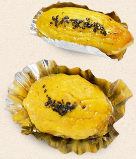

- Home
- 美味しい理由
一口食べたお客様が「いつもの焼きいもと全然違う！」と驚かれることも多い、いもっ娘自慢の焼きいも。
そこには、安納芋に魅了された店長以下、「いもっ娘」たちのさまざまなこだわりが詰まっています。
その美味しさの理由をちょっとだけ、お教えしましょう。
料理の味を左右するのは、まず素材、そして調理方法です。
銀座いもっ娘は、とにかく素材の品質にこだわります。
数ある安納芋の産地から、鹿児島県種子島をチョイス。濃厚な甘みが特長の安納芋ですが、その中でも特に甘みの強い完熟安納芋を使用しています。
種子島産の安納芋は、もともと糖分が多い品種ですが、丁寧に焼き上げることで、その糖度は40度以上にもなります。しかし、糖度の割にはカロリー自体は少なく、とてもヘルシー。
収穫量もそれほど多くないため、「本物の安納芋」の甘みを味わえる機会は、貴重と言えるかもしれません。
-
素材の次にこだわるのは、調理法です。
水分量が多く、扱いが難しい安納芋ですが、その特性を知り尽くした当店スタッフ「いもっ娘」にお任せいただければ問題ありません。
個々のお芋の熟成状況などを見極めながら、適切な手法、温度でじっくりと焼き上げます。
安納芋は、通常の焼きいものホクホクとした食感とは異なり、とろっとしたクリーム状のネットリ感が特長。ねっとりとからみつくような舌触りと、口の中いっぱいに広がる甘さこそが、安納芋を「天然のスイーツ」といわしめる所以です。
いもっ娘では、専用の焼き釜を使い、熟練の技術とたっぷりの愛情で焼き上げた、本当に美味しい安納芋をご提供しています。
-

いもっ娘のこだわりは、焼きいもだけにとどまりません。
鹿児島県種子島産の安納芋焼きいもをベースとして、様々に工夫をこらした焼きいもスイーツの販売も行っております。
トロトロに焼き上げた安納芋は、一手間加えることで、さらに美味しさアップ。
クリーミーな安納芋と上品な生クリームがマッチしたロールケーキ、安納芋ペーストを贅沢に使用したモンブラン、ふわふわの食感が人気のシフォンケーキなど多彩なラインアップをご用意。
焼きいもと一緒にテイクアウトしていただく他、店内のカフェスペースでおしゃべりのお供にお楽しみいただいております。